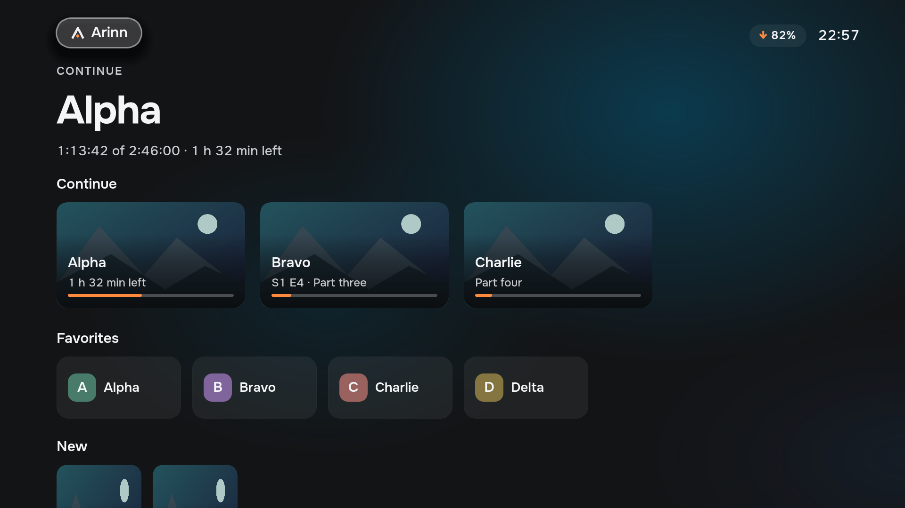

THE ARINN HANDBOOK PRE-ALPHA
Your PC. Your TV.
One place to begin.
Arinn is a living-room interface for a Linux PC connected to your TV. Open websites, films, games and installed apps from one Home screen, using a keyboard-compatible remote or keyboard.
Keep the applications you already use. Open Home over the current app, then use Back to return without closing it. Arinn runs on your existing Linux installation.

02 / GET STARTED
Install & launch
The primary setup is Arch Linux or EndeavourOS, KDE Plasma 6 on Wayland, and a systemd user session. Use a keyboard, or a remote that sends standard keyboard events. Other distributions are not qualified.
1. Install a prototype package
Download an Arch package and its checksums from GitHub Releases. The current Arch package targets x86_64. Use a snapshot-… pre-release for a build of a tested source commit; snapshots are still prototypes. Download SHA256SUMS from the same release, compare your package’s sha256sum with its entry, then install the downloaded file:
sudo pacman -U ./arinn-<version>-<release>-<arch>.pkg.tar.zstReplace the placeholder with the actual filename. Installation does not start Arinn or enable autostart. Prototype packages may be labelled as pre-releases.
2. Start from your desktop
Open Arinn in the application menu. This starts the session once and shows Home. While Arinn is running, use Meta + F12 to bring Home over another application.
3. Choose whether to start at login
For KDE Plasma, enable the session target once, then log in again:
systemctl --user enable arinn-session.targetTo disable startup and stop the current session:
systemctl --user disable arinn-session.target
systemctl --user stop arinn-session.targetDisable the target before uninstalling the package. Stop Arinn before updating it, then open it again from the application menu.
X11 and XFCE setups
X11/EWMH is an MVP target, but real desktop qualification and persistent XFCE startup remain pending. KDE Plasma X11 also requires compositing. Use the exact setup and environment recipes in the X11/EWMH guide or KDE X11 guide; do not enable the KDE and EWMH targets together.
Build from source
For dependencies and source-build commands, follow the repository setup guide. Source builds and package installs have different startup paths. Developer runbooks include tests that alter the real desktop and require explicit operator approval.
03 / YOUR FIRST EVENING
Your first five minutes
After installation, try one simple trip from Home to an app and back.
- Open Arinn from your desktop’s application menu. Home shows available application and website tiles. Use arrows to move the focus and Enter to select.
- Open an installed app. Choose one on Home, or use the on-screen menu to open Applications. The app keeps its own controls while you use it.
- Come Home. Press Meta + F12 to show Arinn over the app. It keeps running; its current activity can appear in Continue.
- Go back. Press Back (Esc on a keyboard) from Home to return to the active app. The Home key inside Arinn and the global shortcut outside it have different roles; see the key guide.
- Add something you use. Connect Chrome or Chromium and add a website tile, or choose a media folder for Library.
If a tile is missing or a screen says unavailable, check the troubleshooting steps. For the first setup, keep a hardware keyboard nearby. To type with the remote, select Keyboard in a text field to open the on-screen keyboard.
04 / FIND YOUR WAY
Learn the controls
Home is an overlay above your current activity. Opening it keeps the application running. Back from Home returns to that application; when there is no active application, Back opens navigation.
| Key | Use it to |
|---|---|
| Meta + F12 | Open global Home while another application has focus. |
| Arrow keys | Move the visible focus between controls. |
| Enter | Select the focused tile, button or setting. |
| Esc / Backspace | Go back; text fields keep Backspace for editing. |
| Home | Go to Home inside the shell, including from a nested screen. |
| Menu | Open navigation or a tile's available actions, depending on the screen. |
The menu button on Home also opens navigation. Current source builds support Home and Menu across the shell’s screens; older packages may predate that routing fix. Outside Arinn, navigation keys belong to the application. Plasma handles global media and volume keys. Current Arinn-managed mpv playback exposes its media controls to Plasma, so play/pause can reach it while another screen has focus.
Extra remote buttons
Keyboard-like remotes can add shell bindings in $XDG_CONFIG_HOME/arinn/config.toml (normally ~/.config/arinn/config.toml). Keep existing configuration and add:
[input.bindings]
select = ["F5"]
menu = ["evdev:582"]These are example buttons; use the codes your device sends. Default keys remain available. Bindings apply when the shell next becomes active and only while it has focus. A settings editor, per-device configuration and gamepad support are not implemented. Global Home is separate: it opens with Meta+F12 and with the remote's Home (HomePage) button. To change the first key, set home_shortcut = "Ctrl+Alt+H" at the top of the same file, before any [section], and sign in again or restart the Arinn daemon. A letter or digit needs Meta, Ctrl or Alt; Esc and Backspace are never accepted. On KDE the file replaces changes made in KDE's Shortcuts settings. See the Home key rules. See the binding rules for supported actions and validation.
05 / ONLINE
Browser & services
Arinn uses your installed Chrome or Chromium. The package includes a browser extension and a native messaging host; you must load the extension yourself.
- Open
chrome://extensionsin your browser. - Enable Developer mode, then choose Load unpacked.
- Select
/usr/share/arinn/chrome-extension. - After an Arinn package update, press Reload on the extension card.
The extension uses tabs and native messaging permissions, without content scripts for reading pages. Incognito is not connected by default. Installation details are in the browser runtime guide.
Add a site as an application
In Applications, use Add application — Any site as an application, then enter a title and address with a hardware keyboard, or select Keyboard beside a field to type it with the remote. To change or remove a shortcut, focus its tile in Applications and press Menu, or select the visible Edit shortcut button. Change the title or address and save, or use Remove in the editor. An empty title saves the site's address.
You can also manage shortcuts in a terminal:
arinnctl shortcuts list
arinnctl shortcuts add "Example service" https://example.org/Use HTTPS for online services. Plain HTTP is accepted only for local-network hosts. Do not put credentials in a shortcut address.
Switch between services
Select a shortcut tile to open it. Open services lists managed browser activities so you can return to one or close it. Opening Home keeps the browser activity running. DRM, streaming-service compatibility and real TV behavior still require qualification.
06 / YOUR APPS
Apps, games & Home
Open the on-screen menu and choose Applications. Arinn discovers installed Linux applications through their desktop entries and groups them into Online, Games, Media and Other. Select a tile with Enter to launch it.
Steam and emulators
Install Steam or EmulationStation / ES-DE separately, as you normally would on Linux. When their desktop entries are available, launch their tiles in Arinn, then choose games inside the application. Arinn currently opens the launcher; it does not provide its own Steam library or emulator game catalogue.
The remote navigates Arinn. Controls inside a browser, game or other app depend on that application; keep its usual keyboard, controller or pointer available. Use the global Home shortcut to bring Arinn back over it.
Return to an open app
From Home, Back returns to the active app. You can also select its Continue card. In Applications, the Open windows row lets you activate a listed running window; managed browser pages have their own Open services screen.
What appears in Favorites?
In the current build, the Home row labelled Favorites brings together your saved website shortcuts and discovered applications automatically. Adding a website gives it a reusable tile. Choosing and ordering a separate pinned list is still being connected to the shell; the current Home row is not a manually curated list.
If an installed app is missing, confirm that it appears in your desktop’s application menu and that the application integration is available in arinnctl providers. See the application discovery guide for desktop-entry visibility rules.
07 / WATCH
Library & playback
The local library scans folders you configure, including network folders already mounted by your operating system. Arinn does not mount SMB or NFS shares for you.
- Install the optional player and media tools:
sudo pacman -S --needed mpv ffmpeg. - Open Settings → Media and configure the folders exposed by the local library provider.
- Open Library, choose a film or series, and select its playback action.
A missing provider leaves its controls unavailable. A scan can take time; the existing catalogue remains visible while it runs. Removing a library folder does not delete your media files. If a network mount goes away, restore the mount before treating content as missing.
Return to what you were watching
Continue on Home brings together current activities and resumable media. The library stores playback progress. During managed playback, the shell supplies controls above the external mpv window. Audio tracks, subtitles and seeking depend on the data and actions the provider reports.
Global Home keeps playback running so you can return to it. Back first hides the player controls; leaving playback is a separate action. Do not assume an ordinary external player has all the managed mpv controls.
Folder naming, scanning and resume details: media guide. Playback presentation limits: managed playback guide.
08 / YOUR QUEUE
Downloads
Choose Downloads from the on-screen menu to see the connected download queue. The current integration uses Transmission. Add jobs in your usual Transmission client; Arinn shows their status and offers Pause, Resume, Start now or Retry when available.
Transmission must be running with an RPC endpoint the integration can reach. Arinn does not start or configure the Transmission server for you. With no connected service, the screen shows unavailable. Connection settings and the default local endpoint are in the Transmission setup guide.
From download to Library
Keep downloaded media inside a configured library folder, or configure a path mapping for a remote server. Once completed media is imported, the Watch action opens its Library detail so you can choose playback. A completed job waiting for import does not yet offer Watch. Arinn does not move or delete the files or stop seeding to import them.
The queue is connected in the current source build. End-to-end use with a real Transmission server and TV still needs qualification; try the flow on your setup before relying on it.
09 / PREFERENCES
Settings & privacy
Settings shows the controls provided by connected integrations. Select a row to change a toggle, choose an option, edit text or adjust a number. Disabled controls remain visible; empty categories mean no integration currently supplies settings there.
A value marked for the next start applies when its provider restarts. Text settings can be typed with the on-screen keyboard; folder paths still need a hardware keyboard. The current prototype uses one shared household space: there are no separate user profiles or accounts.
Configuration and saved state
Daemon configuration lives under $XDG_CONFIG_HOME/arinn, normally ~/.config/arinn. Providers own their media and resume state. Keep backups before manually editing configuration; changing a library folder does not remove its files.
Optional diagnostics
Sentry diagnostics are disabled by default. You do not need to enable them to use Arinn. The current development opt-in has no consent dialog; public-release consent and privacy work remain pending. Diagnostic categories and limitations are listed in the telemetry guide.
To keep diagnostics disabled, use the following in ~/.config/arinn/telemetry.toml, or under your configured XDG directory:
[telemetry]
enabled = falseExisting processes do not reload this flag. Restart the active Arinn session target to apply a change. Do not put tokens or account credentials in configuration examples or bug reports.
10 / GET HELP
Troubleshooting
Start with a status check
arinnctl status
arinnctl providers
arinnctl diagnostics
systemctl --user status arinn-session.target arinnd.service arinn-shell.serviceFor an EWMH session, check arinn-ewmh-session.target and arinn-ewmh.service instead of the KDE target and adapter. Commands run as your logged-in user, without sudo.
Home does not appear
Check that the daemon, shell and selected platform adapter are running in the intended graphical session. Try arinnctl home. If you closed the shell with its Exit menu while the target remained active, the current desktop launcher can fail to reopen it (#331); start arinn-shell.service with systemctl --user start arinn-shell.service, then request Home again. An unavailable lock-state service also keeps the shell hidden. X11 environment recipes are in the platform guides above.
A website will not open
Confirm that Chrome or Chromium and the unpacked extension are installed. Reload the extension after updates, then check arinnctl providers for the browser backend. A shortcut cannot work without an available browser provider.
The library is empty, or a film will not play
Check configured roots, permissions and mounted folders. Confirm the library and playback providers are available and that mpv is installed. Missing artwork does not necessarily mean missing media. Codec and hardware support depend on the player and your system.
A screen or control says unavailable
Check the provider list first. A screen may depend on work that has not shipped yet; consult Prototype limits below. A missing capability does not mean an action succeeded.
Media keys do not control managed playback
Current source builds expose an Arinn-managed mpv session to Plasma while it is playing or paused. Check your desktop’s media-key binding and selected player, especially if another player is open. Older packages may predate this integration. Use the visible playback controls to check that the session itself works; see the media integration guide for details.
Report a reproducible problem
Open a GitHub issue with your package version, desktop/session type, steps, expected result and observed result. Review output before sharing it: remove personal paths, URLs, tab titles, credentials and tokens. Report security problems through the security policy.
11 / KNOW THE LIMITS
Prototype limits
This guide is maintained with the code. Availability can differ between an older package and the current default branch; check your release notes.
- Downloads is connected in current source builds; real Transmission-to-Library-to-playback use on a TV still needs qualification.
- Power, suspend/wake and ambient acceptance remain open; use your desktop's system controls (#148).
- Real X11/TV qualification and persistent XFCE startup are pending.
- Folder paths cannot be typed with the on-screen keyboard yet (#426). There is no per-user profile system or gamepad configuration UI. Manually pinning and ordering Home favorites is not yet connected.
- Global Home shortcut configuration still has a known limitation (#286). Playback, streaming-service compatibility and hardware behavior still need testing on your setup.
For intended behavior, see the specification. For accepted milestones and remaining work, see the roadmap. These implementation notes do not mean the prototype has completed everyday TV testing.